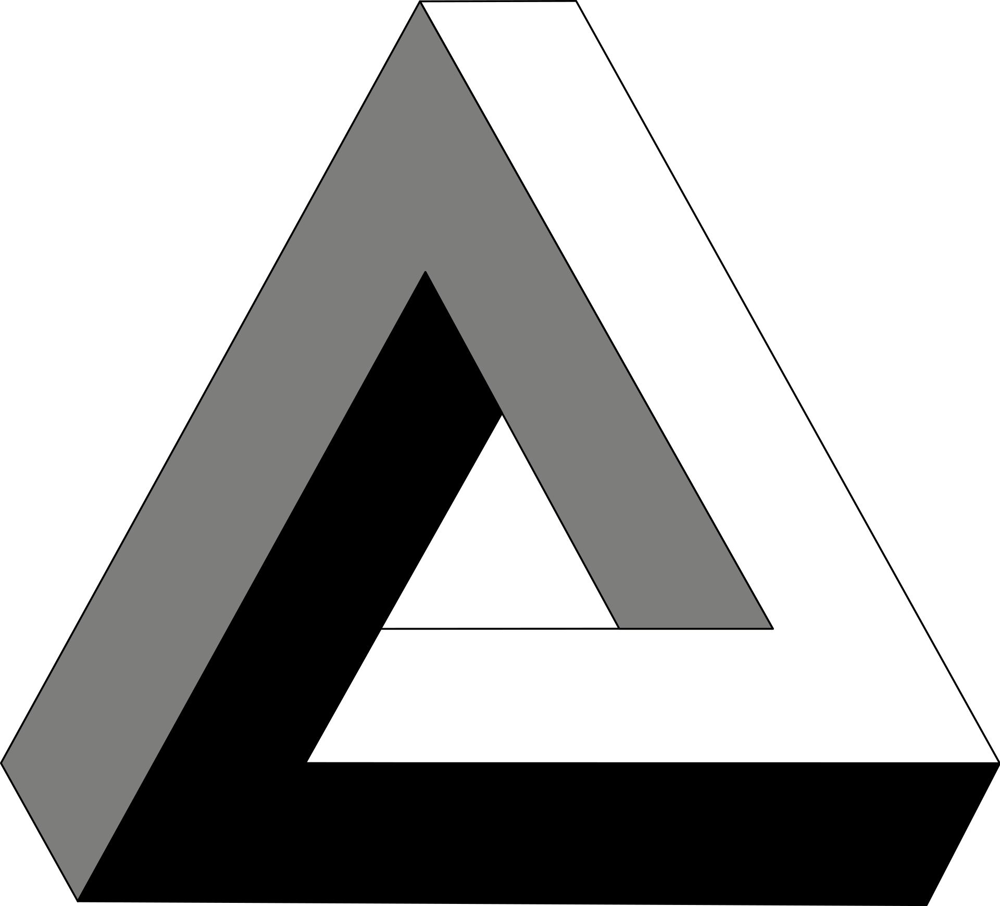
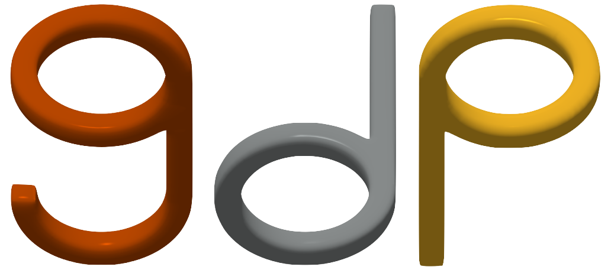

Meschers: Geometry Processing of Impossible Objects
Abstract
Impossible objects, geometric constructions that humans can perceive but that cannot exist in real life, have been a topic of intrigue in visual arts, perception, and graphics, yet no satisfying computer representation of such objects exists.
Previous work embeds impossible objects in 3D, cutting them or twisting/bending them in the depth axis. Cutting an impossible object changes its local geometry at the cut, which can hamper downstream graphics applications, such as smoothing, while bending makes it difficult to relight the object. Both of these can invalidate geometry operations, such as distance computation.
As an alternative, we introduce meschers, meshes capable of representing impossible constructions akin to those found in M.C. Escher's woodcuts. Our representation has a theoretical foundation in discrete exterior calculus and supports the use-cases above, as we demonstrate in a number of example applications. Moreover, because we can do discrete geometry processing on our representation, we can inverse-render impossible objects. We also compare our representation to cut and bend representations of impossible objects.
The Anatomy of A Mescher
Impossible objects are integrable only locally but not globally. In plain English, this means that if we cover a corner of an impossible object with a sheet of paper, the visible part of it begins to look possible! Building on this insight, we construct a specialized mesh representation for Escheresque constructions.
Unlike a typical mesh, which stores per-vertex 3D positions, a mescher stores per-vertex 2D screen-space positions and a per-edge depth difference. Whereas differences in depth across edges must sum up to zero as we travel around a standard mesh, this is not necessarily the case for a mescher. It is a mathematical way of describing the perceptual impossibility.
While the meschers model promises to shed light on human visual perception, from a computer graphics perspective it imporantly allows us to assemble intrinsic geometry operators such as a Laplacian!
Applications
We can now perform many standard geometry processing operations on meschers, such as mesh smoothing.
Excitingly, we can also use inverse rendering to deform a possible torus to match a target image of an impossible triangle. As the paper demonstrates, the impossibility in the optimized result is real and measurable.

Target Image
For a more fun applications and a detailed look at the mathematics behind the model, please refer to the SIGGRAPH 2025 journal paper.
BibTeX
